Guía paso a paso: despliega Ollama y el modelo Qwen 2.5 (1.5B) en una instancia EC2 de AWS Academy, mide el impuesto de tokenización (español vs. inglés), compara temperatura determinista vs. creativa, calcula la velocidad de lectura frente a generación y proyecta costos reales en la nube
Arquitectura en la Nube · Universidad de la Costa (CUC) · Ingeniería de Sistemas · 2026-2 Modalidad individual · Entrega: PDF (Portable Document Format, formato de documento portátil) con evidencias numeradas en el aula virtual · Abierta desde su publicación hasta el domingo 29 de noviembre de 2026
Sigue los pasos en orden, de arriba abajo, sin saltarte ninguno. Vas a lanzar una máquina virtual EC2 (Elastic Compute Cloud, nube de cómputo elástico de Amazon Web Services) en el Sandbox de AWS (Amazon Web Services, servicios web de Amazon) Academy, instalar el servidor de inferencia Ollama, descargar un LLM (Large Language Model, gran modelo de lenguaje) ligero (qwen2.5:1.5b) y ejecutar cuatro experimentos cuantitativos sobre su API (Application Programming Interface, interfaz de programación de aplicaciones) local para entender por qué la inferencia de inteligencia artificial cuesta y rinde de forma asimétrica en la nube.
Antes de empezar: necesitas tu navegador web, el curso de AWS Academy abierto y PowerShell en tu computador. Al finalizar tus pruebas (sección E) es obligatorio terminar tu instancia EC2 (lab-inferencia) para no agotar el presupuesto del laboratorio.
0Qué vas a construir
A diferencia de una consulta web normal donde el servidor devuelve un registro de base de datos en milisegundos, la inferencia de un LLM exige dos etapas físicas muy distintas sobre la CPU (Central Processing Unit, unidad central de procesamiento) o la GPU (Graphics Processing Unit, unidad de procesamiento gráfico) y su memoria RAM (Random Access Memory, memoria de acceso aleatorio) o VRAM (Video Random Access Memory, memoria de video): primero la lectura o prefill (que procesa en paralelo todos los tokens de tu pregunta y determina el TTFT, Time To First Token o tiempo hasta el primer token) y luego la generación o decode (que produce un token tras otro de forma autorregresiva y determina el TPOT, Time Per Output Token o tiempo por token de salida).
AEntrar al Sandbox de AWS Academy
📍 Dónde estás: AWS Academy → Cursos → Módulos → Entorno de pruebas (Sandbox)
A1 · Panel de cursos activos
En AWS Academy abre tu curso activo «AWS Academy Cloud Architecting (Spanish LATAM)», cuyo apodo institucional es «Arquitectura en la Nube 2026-2».
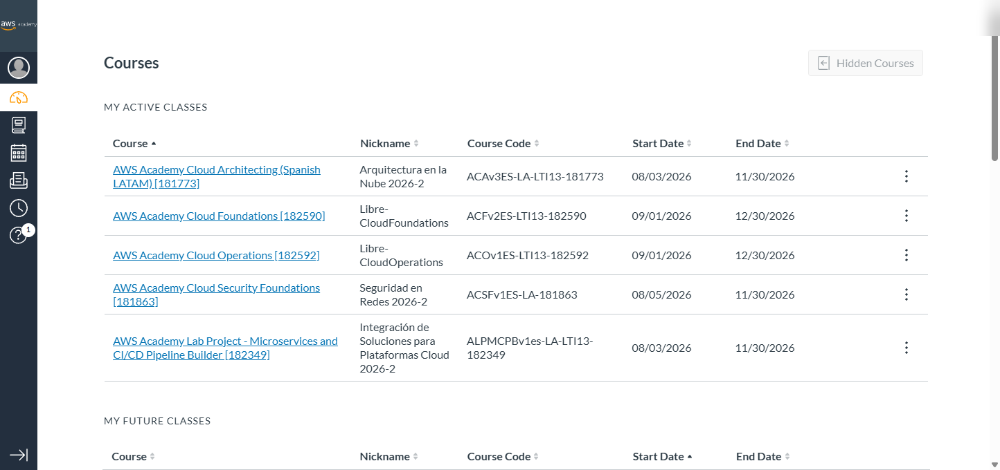
C1 · Muestra: la lista de cursos activos de AWS Academy con «AWS Academy Cloud Architecting (Spanish LATAM)» / «Arquitectura en la Nube 2026-2».
A2 · Menú Módulos y Entorno de pruebas (Sandbox)
Dentro del curso, abre Módulos en el menú izquierdo y desplázate hasta el bloque final para abrir Entorno de pruebas (así se llama el Sandbox en este curso).
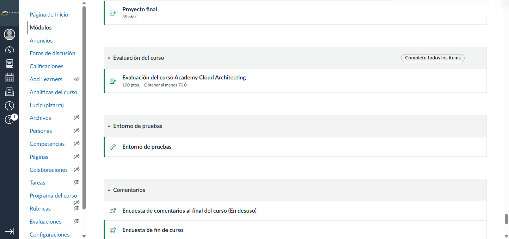
C2 · Muestra: el menú Módulos del curso. Abre el ítem Entorno de pruebas (Sandbox) ubicado al final.
A3 · Iniciar el laboratorio (Start Lab)
En la barra superior del entorno de pruebas verás el indicador AWS con un círculo rojo (apagado). Haz clic en el botón Start Lab (arriba a la derecha) y espera unos minutos mientras se aprovisiona tu cuenta temporal.
C3 · Muestra: la barra del Sandbox con el indicador AWS en rojo antes de iniciar. Pulsa Start Lab arriba a la derecha.
A4 · Indicador AWS en verde
Espera hasta que el punto junto a AWS cambie a color verde y el cronómetro de sesión esté corriendo.
C4 · Muestra: el indicador AWS ya en verde con el cronómetro activo y el presupuesto disponible.
A5 · Descargar tu llave SSH (labsuser.pem) y abrir la consola de AWS
Antes de ir a la consola, haz clic en el botón AWS Details de la barra superior del Sandbox y pulsa el botón Download PEM junto a SSH key para guardar el archivo labsuser.pem en tu carpeta Downloads (Descargas). Luego haz clic directamente en el enlace AWS (junto al punto verde) para abrir la consola de administración en una nueva pestaña.
C5 · Muestra: el entorno del Sandbox listo. Descarga labsuser.pem desde AWS Details y haz clic en el enlace AWS junto al círculo verde para abrir la consola.
BCrear la instancia EC2 (lab-inferencia)
📍 Dónde estás: Consola de AWS → EC2 → Instancias → Lanzar una instancia
B1 · Buscar el servicio EC2
En la barra superior de búsqueda de la consola de AWS escribe EC2 y selecciona EC2 (Servidores virtuales en la nube).
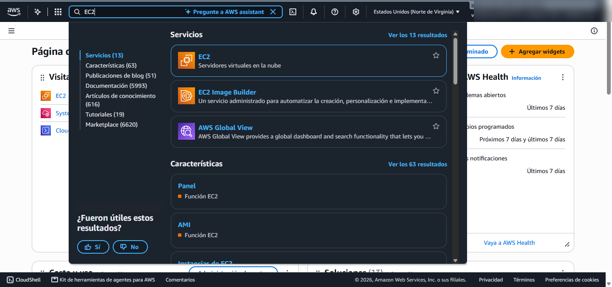
A1 · Muestra: la barra de búsqueda superior de la consola de AWS con EC2 escrito y el acceso directo al servicio.
B2 · Ir a Lanzar la instancia
En el panel principal de EC2 haz clic en el botón naranja Lanzar la instancia (Launch instance).
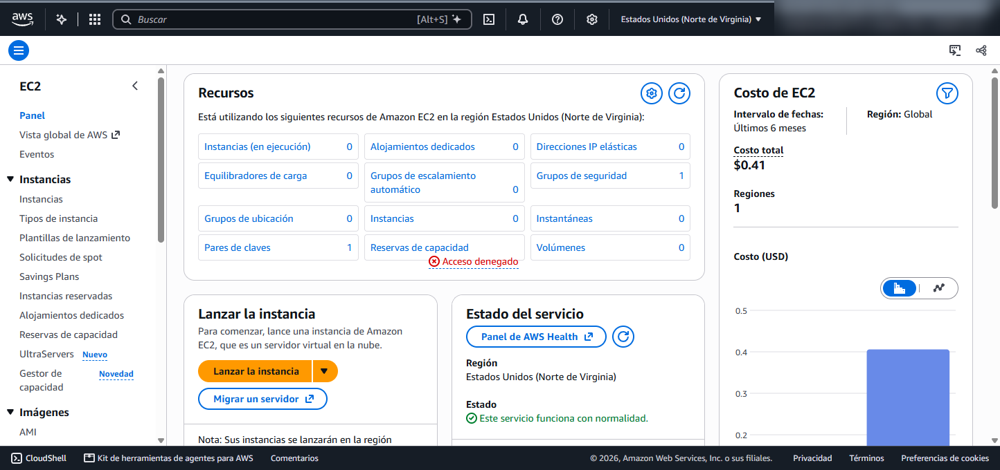
A2 · Muestra: el panel de control de EC2 en la región us-east-1 con el botón naranja Lanzar la instancia.
B3 · Nombre lab-inferencia e imagen Ubuntu Server 24.04 LTS
En el campo Nombre escribe exactamente lab-inferencia. Debajo, en Imágenes de aplicaciones y sistemas operativos (Amazon Machine Image) —donde AMI significa Amazon Machine Image (imagen de máquina de Amazon, la plantilla del sistema operativo)— selecciona Ubuntu y despliega el selector para elegir explícitamente Ubuntu Server 24.04 LTS (HVM), SSD Volume Type, arquitectura de 64 bits (x86) (ami-02a9cdd4e98bc3c78). Las siglas LTS significan Long Term Support (soporte a largo plazo), HVM significa Hardware Virtual Machine (máquina virtual asistida por hardware) y SSD significa Solid State Drive (unidad de estado sólido).
Cuidado con la versión por defecto: el catálogo rápido de AWS muestra primero Ubuntu Server 26.04 LTS. Cambia manualmente el desplegable a Ubuntu Server 24.04 LTS (HVM), SSD Volume Type.
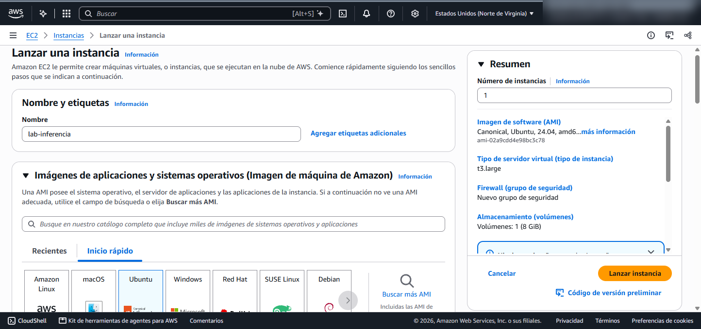
A3 · Muestra: el nombre lab-inferencia y la imagen seleccionada Ubuntu Server 24.04 LTS (HVM), SSD Volume Type (ami-02a9cdd4e98bc3c78, 64 bits x86).
B4 · Tipo de instancia (t3.large vs. límite del Sandbox t3.medium) y par de claves vockey
En Tipo de instancia puedes buscar t3.large (2 vCPU —virtual Central Processing Unit, procesador virtual— y 8 GiB —Gibibytes, 230 bytes— de RAM). Sin embargo, en el Sandbox de AWS Academy Sandbox la política de permisos IAM (Identity and Access Management, gestión de identidades y accesos) aplica un bloqueo explícito (explicit deny) sobre t3.large y solo permite hasta t3.medium (2 vCPU y 4 GiB de RAM). Selecciona por tanto t3.medium para que el lanzamiento sea autorizado (o si tu cuenta particular admite t3.large, úsala; con t3.medium el modelo qwen2.5:1.5b de 986 MB cabe holgadamente en los 4 GiB de RAM). En Par de claves (inicio de sesión) selecciona vockey.
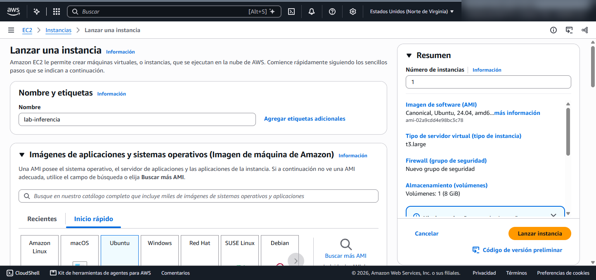
A4 · Muestra: el selector de tipo de instancia y el par de claves vockey. En el Sandbox de AWS Academy elige t3.medium (2 vCPU, 4 GiB de RAM), que es el tamaño máximo permitido por la política IAM del Sandbox.
B5 · Grupo de seguridad (SSH 22 desde «Mi IP») y almacenamiento de 30 GiB
En Configuración de red (dentro de la VPC, Virtual Private Cloud o nube privada virtual por defecto), marca Crear grupo de seguridad, activa únicamente Permitir el tráfico SSH desde —donde SSH significa Secure Shell (intérprete de comandos seguro por red en el puerto TCP 22, Transmission Control Protocol o protocolo de control de transmisión)— y cambia el desplegable de origen de «Cualquier lugar (0.0.0.0/0)» a Mi IP (tu dirección IP —Internet Protocol, protocolo de internet— pública con máscara /32). Más abajo, en Configurar almacenamiento, cambia el tamaño del disco raíz de 8 a 30 GiB de tipo gp3 (General Purpose SSD v3, disco de estado sólido de propósito general de tercera generación de EBS, Elastic Block Store).
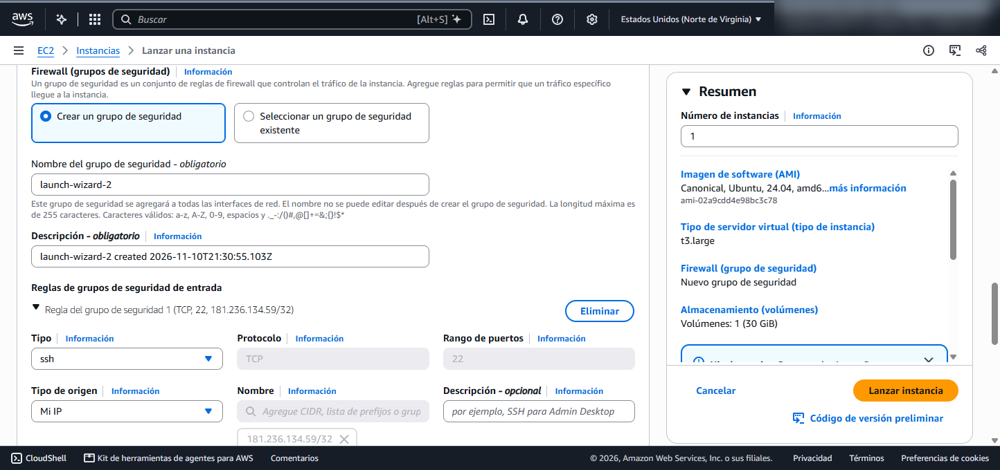
A5 · Muestra: el grupo de seguridad nuevo con la regla SSH (TCP 22) restringida exclusivamente a Mi IP (181.236.134.59/32) y el volumen raíz configurado en 30 GiB gp3.
B6 · Lanzar la instancia y verificar estado Running
Haz clic en el botón naranja Lanzar instancia. Verás el recuadro verde Correcto con el identificador de tu instancia (en nuestra ejecución: i-0269a0a471d12e979). Haz clic sobre ese identificador para ir a la lista de instancias, espera unos segundos a que el Estado de la instancia diga En ejecución (Running) y copia su Dirección IPv4 pública (en nuestra prueba: 52.90.170.176).
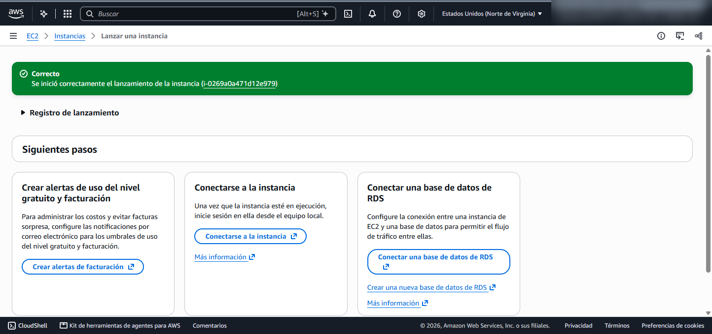
A6 · Muestra: el mensaje verde Correcto confirmando la creación de la instancia i-0269a0a471d12e979.
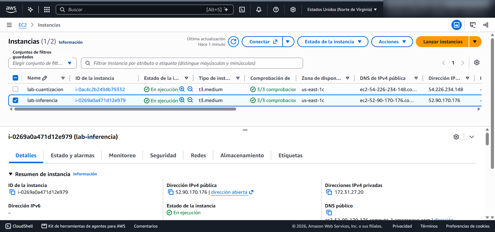
A7 · Muestra: la instancia lab-inferencia (t3.medium) en estado En ejecución con su dirección IPv4 pública 52.90.170.176 en el panel inferior de detalles.
CConectar a la instancia EC2 (por qué falla EC2 Instance Connect y cómo entrar por SSH)
📍 Dónde estás: Consola EC2 → Conectar → y luego Windows PowerShell en tu PC
C1 · Qué ocurre si intentas usar EC2 Instance Connect en el navegador
Si seleccionas lab-inferencia, pulsas Conectar y pruebas la pestaña Conexión de instancias de EC2 (EC2 Instance Connect), verás que la consola intenta abrir una terminal web pero falla con el mensaje rojo: «No se pudo conectar a la instancia — Error al establecer la conexión SSH con la instancia».
Por qué falla EC2 Instance Connect con «Mi IP»: cuando usas EC2 Instance Connect desde el navegador, la conexión SSH hacia el puerto 22 de tu máquina virtual no sale desde la IP de tu computador, sino desde los servidores puente del servicio EC2 Instance Connect de AWS (en la región us-east-1, el bloque CIDR 18.206.107.24/29). Como en el paso B5 configuraste el grupo de seguridad para aceptar SSH únicamente desde «Mi IP» (tu IP pública residencial o universitaria), el firewall de AWS bloquea a los servidores de EC2 Instance Connect.
A8 · Muestra: el fallo esperado de EC2 Instance Connect cuando el grupo de seguridad restringe el puerto 22 a «Mi IP», bloqueando los paquetes provenientes del servicio puente de AWS.
C2 · Conexión directa por SSH desde PowerShell con labsuser.pem (método que sí funciona)
Como tu grupo de seguridad sí permite el puerto 22 desde la IP de tu PC, la conexión directa desde Windows PowerShell usando la llave privada labsuser.pem (que descargaste en el paso A5 desde AWS Details) entra de inmediato sin necesidad de abrir el firewall al resto de internet. Abre PowerShell en tu computador, ubícate en la carpeta donde guardaste labsuser.pem y reemplaza <IP_PUBLICA> por la IPv4 pública de tu instancia:
cd $HOME\Downloads
ssh -i .\labsuser.pem ubuntu@<IP_PUBLICA>
La primera vez que te conectes escribe yes para aceptar la huella criptográfica del servidor. Una vez dentro del prompt ubuntu@ip-...:~$, comprueba los recursos de hardware de tu máquina con:
A9 · Muestra: el ingreso exitoso por SSH desde Windows PowerShell usando labsuser.pem hacia ubuntu@52.90.170.176 y la verificación de hardware (2 vCPU Intel Xeon Platinum 8259CL @ 2.50 GHz, 3.7 GiB de RAM y 29 GB de disco raíz).
DExperimentos de inferencia con Ollama y Qwen 2.5 (1.5B)
📍 Dónde estás: Terminal SSH de tu instancia lab-inferencia (ubuntu@ip-...)
D1 · Instalación de Ollama y primera prueba del modelo (Experimento A)
Ejecuta en tu sesión SSH los siguientes tres comandos para instalar Ollama, descargar el modelo qwen2.5:1.5b (1.500 millones de parámetros, 986 MB en disco) y realizar tu primera inferencia desde la línea de comandos:
curl -fsSL https://ollama.com/install.sh | sh
ollama pull qwen2.5:1.5b
ollama run qwen2.5:1.5b "Explica qué es la computación en la nube en dos frases"
Observa que durante la instalación aparece el aviso WARNING: No NVIDIA/AMD GPU detected. Ollama will run in CPU-only mode. Porque las instancias de la familia t3 no tienen aceleradora gráfica (GPU); toda la multiplicación de matrices ocurre sobre los 2 vCPU y la memoria RAM del sistema.
Texto exacto generado por qwen2.5:1.5b en nuestra ejecución:
«La computación en la nube permite almacenar y ejecutar programas de software en servidores remotos, lo que ofrece una flexibilidad, escalabilidad y accesibilidad global.»
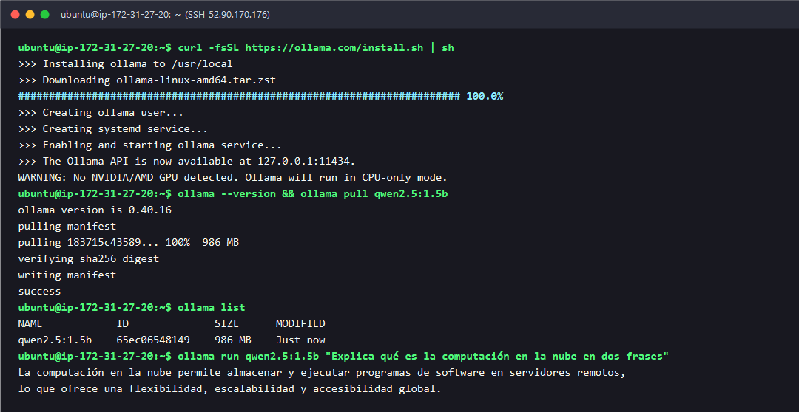
A10 · Muestra: la instalación de Ollama v0.40.16 en modo CPU, la descarga de qwen2.5:1.5b (986 MB) y la respuesta exacta a la primera consulta.
D2 · Impuesto de tokenización: Español vs. Inglés (Experimento B)
Los modelos de lenguaje no leen palabras completas ni letras sueltas, sino tokens (fragmentos de palabras generados mediante el algoritmo BPE, Byte-Pair Encoding o codificación por pares de bytes). Como los vocabularios de los LLM se entrenan mayoritariamente con corpus en inglés, las palabras comunes en inglés suelen caber en un solo token, mientras que las palabras equivalentes en español (con tildes, morfología verbal más larga y sufijos) se parten en varios tokens. A este sobrecosto se le conoce como impuesto de tokenización.
Para medirlo con precisión, consulta la API local de Ollama en http://localhost:11434/api/generate mediante el protocolo HTTP (Hypertext Transfer Protocol, protocolo de transferencia de hipertexto) enviando cargas útiles en formato JSON (JavaScript Object Notation, notación de objetos de JavaScript) con el mismo párrafo técnico en español y en inglés:
# 1) Párrafo técnico en Español (ES):
curl -s http://localhost:11434/api/generate -d '{"model":"qwen2.5:1.5b","prompt":"La arquitectura en la nube permite desplegar servidores virtuales elásticos con balanceo de carga automático y alta disponibilidad en múltiples zonas.","stream":false,"options":{"temperature":0,"num_predict":40}}' | python3 -m json.tool | grep -E '"model"|"response"|"prompt_eval_count"|"prompt_eval_duration"|"eval_count"|"eval_duration"'
# 2) Párrafo técnico equivalente en Inglés (EN):
curl -s http://localhost:11434/api/generate -d '{"model":"qwen2.5:1.5b","prompt":"Cloud architecture allows deploying elastic virtual servers with automatic load balancing and high availability across multiple zones.","stream":false,"options":{"temperature":0,"num_predict":40}}' | python3 -m json.tool | grep -E '"model"|"response"|"prompt_eval_count"|"prompt_eval_duration"|"eval_count"|"eval_duration"'
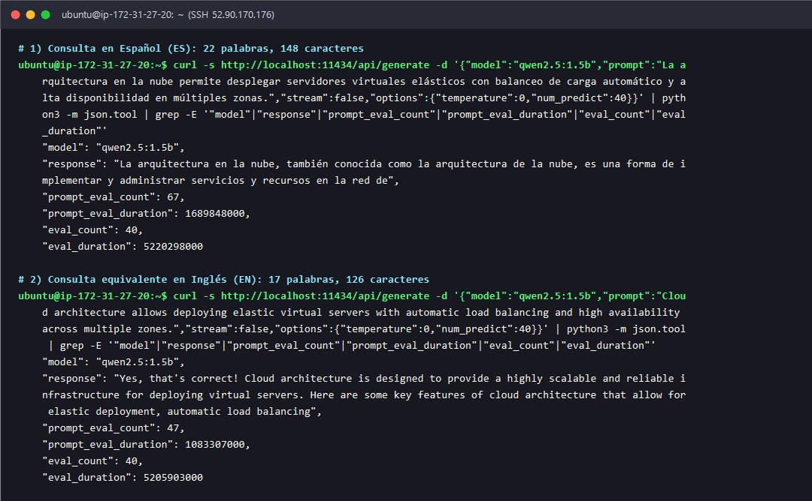
A11 · Muestra: las métricas devueltas por la API de Ollama para el mismo enunciado técnico en español (prompt_eval_count: 67) y en inglés (prompt_eval_count: 47).
En la respuesta JSON de Ollama, el campo prompt_eval_count incluye tanto los tokens de tu texto como los 24 tokens fijos de la plantilla del sistema (chat template de Qwen). Analiza la tabla comparativa con los valores reales medidos:
Métrica medida
Español (ES)
Inglés (EN)
Diferencia absoluta y en % (ES vs. EN)
Texto enviado (prompt)
«La arquitectura en la nube permite desplegar servidores virtuales elásticos con balanceo de carga automático y alta disponibilidad en múltiples zonas.»
«Cloud architecture allows deploying elastic virtual servers with automatic load balancing and high availability across multiple zones.»
Mismo significado técnico
Palabras / Caracteres
22 palabras / 148 caracteres
17 palabras / 126 caracteres
+5 palabras (+29,41 %) / +22 caract. (+17,46 %)
prompt_eval_count total (con plantilla de 24 tokens)
67 tokens
47 tokens
+20 tokens (+42,55 % más tokens en ES)
Tokens puros del enunciado (restando los 24 del sistema)
43 tokens (67 − 24)
23 tokens (47 − 24)
+20 tokens (+86,96 % más tokens en ES)
Tiempo de lectura (prompt_eval_duration)
1.689.848.000 ns (1,690 s)
1.083.307.000 ns (1,083 s)
+0,607 s (+56,00 % más tiempo de cómputo)
Tokens generados (eval_count, fijado en 40)
40 tokens (5,220 s)
40 tokens (5,206 s)
0 tokens (0,00 %)
Total de tokens de la petición (prompt_eval_count + eval_count)
107 tokens
87 tokens
+20 tokens (+22,99 % en el total de la llamada)
Fórmula del porcentaje de sobrecosto en tokens de entrada:
Si descontamos los 24 tokens fijos del sistema, el texto puro en español requirió 43 tokens frente a solo 23 en inglés: un sobrecosto del +86,96 % por expresar exactamente la misma idea técnica.
D3 · Efecto de la Temperatura: 0 vs. 1.2 (Experimento C)
En cada paso de generación, el LLM calcula un vector de puntuaciones (logits) para todo su vocabulario y lo convierte en probabilidades mediante la función softmax escalada por la temperatura (T). Ejecuta la misma pregunta creativa 3 veces con "temperature": 0 y 3 veces con "temperature": 1.2:
# 3 intentos con temperature = 0:
for i in 1 2 3; do
echo "--- Temp 0 (Intento $i) ---"
curl -s http://localhost:11434/api/generate -d '{"model":"qwen2.5:1.5b","prompt":"Propón un nombre creativo de una sola palabra para una plataforma educativa en la nube y explica en una frase su significado.","stream":false,"options":{"temperature":0}}' | python3 -c "import sys,json; d=json.load(sys.stdin); print(d['response'].replace('\n',' '), '[eval_count='+str(d['eval_count'])+']')"
done
# 3 intentos con temperature = 1.2:
for i in 1 2 3; do
echo "--- Temp 1.2 (Intento $i) ---"
curl -s http://localhost:11434/api/generate -d '{"model":"qwen2.5:1.5b","prompt":"Propón un nombre creativo de una sola palabra para una plataforma educativa en la nube y explica en una frase su significado.","stream":false,"options":{"temperature":1.2}}' | python3 -c "import sys,json; d=json.load(sys.stdin); print(d['response'].replace('\n',' '), '[eval_count='+str(d['eval_count'])+']')"
done
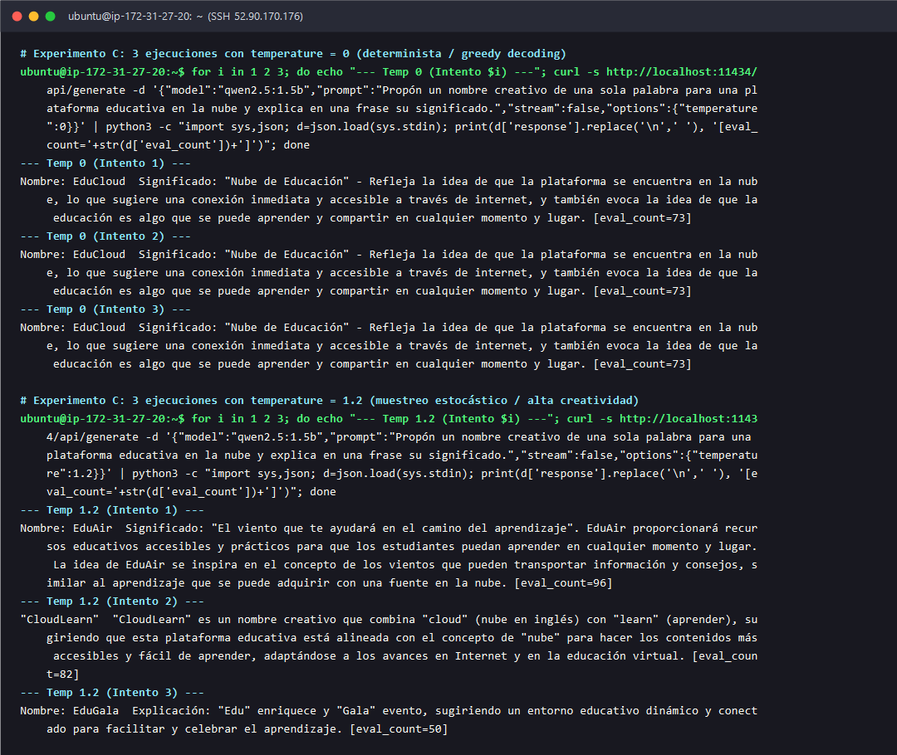
A12 · Muestra: las 3 ejecuciones con temperature: 0 (idénticas palabra por palabra: «EduCloud», 73 tokens) frente a las 3 ejecuciones con temperature: 1.2 (tres nombres y textos completamente distintos: «EduAir», «CloudLearn» y «EduGala»).
Configuración
Intento
Salida real obtenida (response)
prompt_eval_count
eval_count
temperature: 0
Intento 1
Nombre: EduCloud — Significado: "Nube de Educación" - Refleja la idea de que la plataforma se encuentra en la nube, lo que sugiere una conexión inmediata y accesible a través de internet, y también evoca la idea de que la educación es algo que se puede aprender y compartir en cualquier momento y lugar.
58
73
temperature: 0
Intento 2
Nombre: EduCloud — Significado: "Nube de Educación" - Refleja la idea de que la plataforma se encuentra en la nube, lo que sugiere una conexión inmediata y accesible a través de internet, y también evoca la idea de que la educación es algo que se puede aprender y compartir en cualquier momento y lugar.
58
73
temperature: 0
Intento 3
Nombre: EduCloud — Significado: "Nube de Educación" - Refleja la idea de que la plataforma se encuentra en la nube, lo que sugiere una conexión inmediata y accesible a través de internet, y también evoca la idea de que la educación es algo que se puede aprender y compartir en cualquier momento y lugar.
58
73
temperature: 1.2
Intento 1
Nombre: EduAir — Significado: "El viento que te ayudará en el camino del aprendizaje". EduAir proporcionará recursos educativos accesibles y prácticos para que los estudiantes puedan aprender en cualquier momento y lugar...
58
96
temperature: 1.2
Intento 2
"CloudLearn" — "CloudLearn" es un nombre creativo que combina "cloud" (nube en inglés) con "learn" (aprender), sugiriendo que esta plataforma educativa está alineada con el concepto de "nube"...
58
82
temperature: 1.2
Intento 3
Nombre: EduGala — Explicación: "Edu" enriquece y "Gala" evento, sugiriendo un entorno educativo dinámico y conectado para facilitar y celebrar el aprendizaje.
58
50
¿Por qué ocurre esto matemáticamente? La probabilidad P(w_i) de elegir el token w_i con puntaje z_i se calcula mediante la función softmax con temperatura T: P(w_i) = exp(z_i / T) / Σ_j exp(z_j / T):
Con temperature: 0 (decodificación voraz o greedy decoding): el muestreo aleatorio se desactiva y el motor elige siempre el token de máxima probabilidad (argmax). Al partir de los mismos tokens de entrada, la cadena generada es 100 % determinista y se repite de forma idéntica (siempre EduCloud y exactamente 73 tokens). Ideal para extracción de datos, código, clasificación o consultas SQL (Structured Query Language, lenguaje de consulta estructurado).
Con temperature: 1.2 (muestreo estocástico con distribución aplanada): al dividir los logitsz_i entre 1,2, las diferencias entre el token más probable y los candidatos secundarios se reducen (la distribución de probabilidad se aplana). Así, en cada intento el muestreo elige rutas distintas desde las primeras sílabas (EduAir con 96 tokens, CloudLearn con 82 tokens y EduGala con 50 tokens). Útil para lluvia de ideas, pero peligroso en tareas técnicas porque incrementa el riesgo de alucinaciones.
D4 · Velocidad de lectura (prefill) vs. velocidad de generación (decode) (Experimento D)
Ahora mide cuánto tarda la instancia t3.medium en leer un párrafo extenso de arquitectura frente a cuánto tarda en redactar la respuesta. Ejecuta:
curl -s http://localhost:11434/api/generate -d '{"model":"qwen2.5:1.5b","prompt":"En una arquitectura empresarial de computación en la nube sobre Amazon Web Services, las instancias EC2 ejecutan contenedores y microservicios distribuidos en varias subredes privadas dentro de una VPC, mientras un balanceador de carga distribuye el tráfico entrante HTTPS y una base de datos relacional gestionada garantiza copias de seguridad automáticas. Resume en dos puntos clave las ventajas operativas de este diseño.","stream":false,"options":{"temperature":0}}' | python3 -m json.tool | grep -E '"model"|"done_reason"|"total_duration"|"load_duration"|"prompt_eval_count"|"prompt_eval_duration"|"eval_count"|"eval_duration"'
Y calcula directamente en la terminal las velocidades en tokens por segundo recordando que Ollama reporta los tiempos en nanosegundos (1 s = 109 ns):
python3 -c "p_c=125; p_d=3381407000/1e9; e_c=175; e_d=24920180000/1e9; print(f'Lectura (prefill): {p_c} tokens / {p_d:.3f} s = {p_c/p_d:.2f} tokens/s'); print(f'Generacion (decode): {e_c} tokens / {e_d:.3f} s = {e_c/e_d:.2f} tokens/s'); print(f'Ratio prefill/decode: {(p_c/p_d)/(e_c/e_d):.2f}x mas rapido leyendo que generando')"
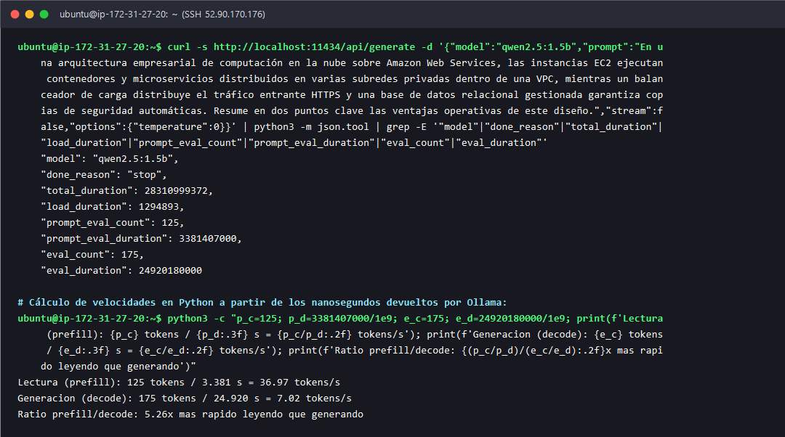
A13 · Muestra: la salida real de tiempos de la API de Ollama y el cálculo en Python: 36,97 tokens/s en lectura (prefill) frente a 7,02 tokens/s en generación (decode).
Fase de la inferencia
Cantidad de tokens
Duración en nanosegundos (API)
Duración en segundos (÷ 109)
Velocidad medida (tokens/s)
Latencia por token (ms/token)
Lectura / Entrada (Prefill)
prompt_eval_count = 125
3.381.407.000 ns
3,3814 s (TTFT)
36,97 tokens/s
27,05 ms/token
Generación / Salida (Decode)
eval_count = 175
24.920.180.000 ns
24,9202 s
7,02 tokens/s
142,40 ms/token (TPOT)
Total de la consulta
300 tokens totales
28.310.999.372 ns
28,3110 s
Ratio: 5,26× más rápido leer que generar
—
Cálculo paso a paso con las fórmulas del laboratorio:
Velocidad de lectura (prefill) = prompt_eval_count / (prompt_eval_duration / 109) = 125 / 3,381407 s = 36,97 tokens/s Velocidad de generación (decode) = eval_count / (eval_duration / 109) = 175 / 24,920180 s = 7,02 tokens/s
¿Por qué generar es 5,26 veces más lento que leer?
La lectura (prefill) es intensiva en cómputo (compute-bound) y paralela: como todos los 125 tokens de tu pregunta ya se conocen al inicio, el procesador carga los pesos del modelo una sola vez desde la RAM y multiplica toda la matriz de entrada de golpe en paralelo.
La generación (decode) es autorregresiva y está limitada por el ancho de banda de memoria (memory-bandwidth-bound): para producir el token k + 1, el modelo necesita haber calculado antes el token k. Eso obliga a generar un solo token a la vez en un bucle secuencial. Para cada uno de los 175 tokens generados, la CPU tiene que volver a leer los 986 MB de pesos del modelo desde la memoria RAM hacia los registros del procesador (leyendo casi 175 × 0,986 GB ≈ 172,5 GB de tráfico de memoria a lo largo de la respuesta).
D5 · Proyección de costos reales en la nube para 1.000 consultas (Experimento E)
Esa misma asimetría física entre leer (prefill paralelo) y generar (decode secuencial) explica por qué todos los proveedores comerciales de nube cobran entre 3 y 5 veces más caro cada token de salida que cada token de entrada.
Tomemos como referencia precios de lista publicados por los proveedores (consúltalos el día que hagas el lab: cambian con frecuencia y algunos modelos se retiran) en Amazon Bedrock (región us-east-1, modalidad On-Demand estándar) y en la API oficial de OpenAI para proyectar cuánto cuestan 1.000 consultas con el volumen exacto medido en nuestro Experimento D (125 tokens de entrada y 175 tokens de salida por consulta, lo que equivale a 125.000 tokens de entrada y 175.000 tokens de salida en 1.000 consultas):
Modelo comercial y fuente oficial (precio de referencia; verifica el actual)
Conclusión arquitectónica sobre costos: aunque tu prompt de entrada (125 tokens) y la respuesta del modelo (175 tokens) tienen tamaños parecidos, en la factura de Claude 3.5 Sonnet en Amazon Bedrock el 87,50 % del dinero (US$ 2,625 de US$ 3,00) se va pagando los tokens de salida porque cada token generado mantiene ocupada la memoria y los núcleos del acelerador durante 5,26× más tiempo que un token leído. Por eso, limitar la longitud de salida (con instrucciones concisas o con num_predict / max_tokens) ahorra mucho más presupuesto en la nube que recortar el prompt de entrada.
ETerminar tu instancia lab-inferencia (obligatorio)
📍 Dónde estás: Consola de AWS → EC2 → Instancias
Importante: termina tu instancia lab-inferencia en cuanto acabes las mediciones para que deje de consumir presupuesto del Sandbox.
E1 · Seleccionar lab-inferencia y pulsar Terminar instancia
Cierra tu sesión SSH en PowerShell escribiendo exit. Regresa a la pestaña de la consola de AWS (EC2 → Instancias), marca la casilla de tu instancia lab-inferencia, despliega el menú superior Estado de la instancia (Instance state) y elige Terminar (eliminar) instancia (Terminate instance). Confirma pulsando el botón Terminar (eliminar).
E2 · Verificar el estado Terminada (Terminated)
Refresca la tabla de instancias tras unos 30 segundos y verifica que el Estado de la instancia de lab-inferencia cambie a Terminada (Terminated). Toma captura de pantalla de esta vista: es obligatoria para tu entrega.
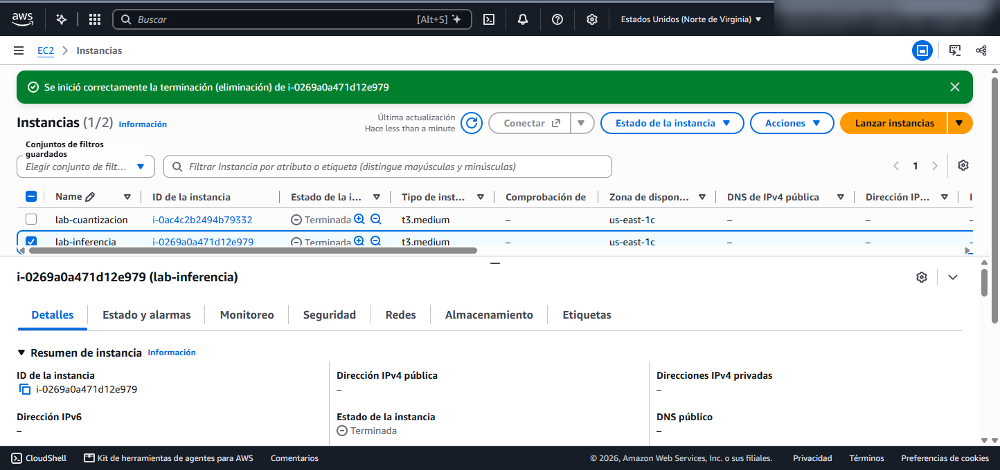
A14 · Muestra: la instancia lab-inferencia (i-0269a0a471d12e979) ya en estado Terminada (Terminated), liberando el volumen EBS y deteniendo el cobro por hora.
Qué entregar y rúbrica de evaluación
Sube al aula virtual un único archivo PDF (modalidad individual, disponible desde su publicación hasta el domingo 29 de noviembre de 2026) que contenga:
Evidencias completas en capturas reales: lanzamiento y ejecución de lab-inferencia en EC2, conexión SSH e instalación de Ollama con la primera respuesta de qwen2.5:1.5b, prueba de tokenización ES vs. EN, prueba de temperaturas 0 vs. 1.2, prueba de velocidades prefill vs. decode, e instancia en estado Terminated.
Tablas y cálculos con tus propios números medidos: tabla comparativa de tokens ES vs. EN con el cálculo del porcentaje de diferencia, tabla de las 6 ejecuciones de temperatura, cálculo de tokens/s de lectura y generación a partir de los nanosegundos de la API, y cálculo del costo de 1.000 consultas citando la tarifa oficial utilizada.
Conclusión técnica propia (1 a 2 párrafos): explicando con tus resultados por qué el español consume más tokens en BPE, cuándo usarías temperatura 0 frente a 1.2 en un sistema en producción y por qué los tokens de salida dominan la factura de un servicio LLM en la nube.
Rúbrica de calificación (sobre 5,0 puntos · 10 % del curso)
Criterio
Descripción de lo evaluado
Calificación
Evidencias completas
Presenta todas las capturas reales de consola EC2, conexión SSH, ejecución de los experimentos A, B, C y D en la instancia lab-inferencia y captura final en estado Terminated.
2,0
Tablas y cálculos correctos
Construye las tablas con los datos reales extraídos de sus capturas y calcula correctamente el % de diferencia ES vs. EN, las velocidades en tokens/s (conversión desde nanosegundos 109) y el costo de 1.000 consultas con fuente oficial citada.
2,0
Conclusión
Explica con rigor técnico el impuesto de tokenización BPE, la diferencia entre decodificación voraz (temp 0) y muestreo estocástico (temp 1.2), el cuello de botella de memoria en el decode autorregresivo y su impacto en el costo de nube.
1,0
Calificación total de la actividad
5,0 (10 %)
FProblemas frecuentes
📍 Dónde estás: Solución rápida de errores comunes durante el laboratorio
Síntoma o mensaje de error
Causa y cómo resolverlo
Al lanzar con t3.large aparece el error rojo You are not authorized to perform this operation ... explicit deny in an identity-based policy
La política IAM del Sandbox de AWS Academy Sandbox bloquea los tamaños *.large o superiores en ciertas cuentas estudiantiles. Cambia el tipo de instancia a t3.medium (2 vCPU, 4 GiB RAM) y vuelve a pulsar Lanzar instancia.
Al crear el grupo de seguridad aparece The security group 'launch-wizard-1' already exists
Ya existe un grupo con ese nombre en tu VPC. Cambia el nombre del grupo de seguridad a launch-wizard-2 o sg-lab-inferencia conservando la regla SSH 22 desde «Mi IP».
EC2 Instance Connect se queda cargando y muestra No se pudo conectar a la instancia
Es el comportamiento normal cuando el grupo de seguridad solo permite SSH desde «Mi IP», ya que EC2 Instance Connect entra desde las IPs del servicio de AWS. Conéctate desde Windows PowerShell con ssh -i .\labsuser.pem ubuntu@<IP_PUBLICA> como se explica en el paso C2.
En PowerShell el comando ssh -i .\labsuser.pem ... falla por UNPROTECTED PRIVATE KEY FILE!
Windows requiere que solo tu usuario tenga permisos sobre el archivo .pem. Ejecuta en PowerShell: icacls .\labsuser.pem /inheritance:r /grant:r "$($env:USERNAME):(R)"